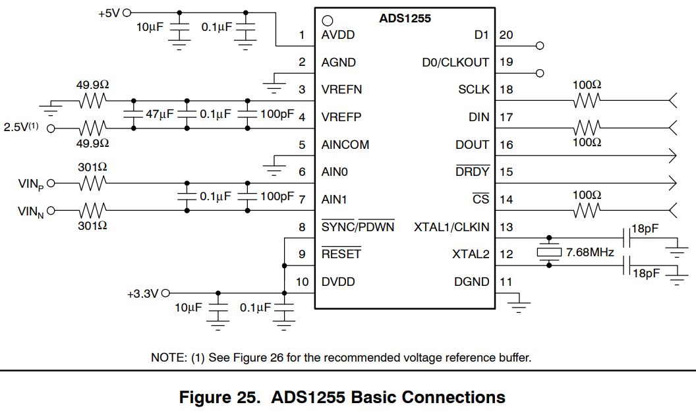
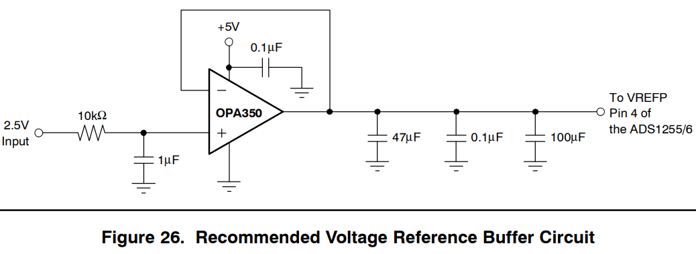
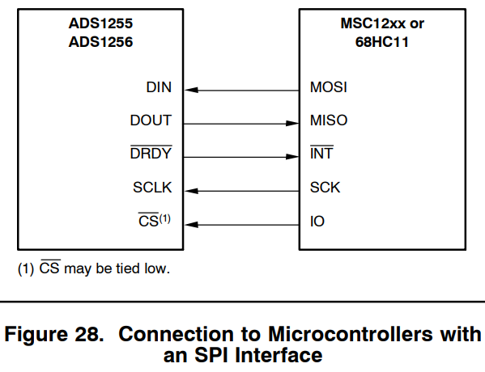

ADS1256 24Bits ADC¶
| Date: | 14 Oct 2019 |
|---|
Warning: Change of plan!¶
- Why use 24 bits ADC? Becuase A typical adult human EEG signal is about
10 µV to 100 µVin amplitude when measured from the scalp and is about 10~20 mV when measured from subdural electrodes. - ESP32 has 12 bits resolution and can measure 0~1.1V ( see here ), this means the resolution is
268 µV. larger than the brain signal itself ! The problem is not resolution but scale! - Thus instead of using an expensive 24 bits ADC, we can just use an
An amplifier + ESP32!
General Recommendations¶
http://www.ti.com/lit/ds/symlink/ads1256.pdf

- Grounding
- It is recommended to use a single ground plane for both the analog and digital supplies. This ground plane should be shared with the bypass capacitors and analog conditioning circuits.
- However, avoid using this ground plane for noisy digital components such as microprocessors.
- If a split ground plane is used with the ADS1255/6, make sure the analog and digital planes are tied together. There should not be a voltage difference between the ADS1255/6 analog and digital ground pins (AGND and DGND).
- Power supply
- As with any precision circuit, use good supply bypassing techniques. A smaller value ceramic capacitor in parallel with a larger value tantalum or a larger value low-voltage ceramic capacitor works well.
- Place the capacitors, in particular the ceramic ones, close to the supply pins.
- Digital pins
- Run the digital logic off as low of voltage as possible. This helps reduce coupling back to the analog inputs. Avoid ringing on the digital inputs. Small resistors (≈100Ω) in series with the digital pins can help by controlling the trace impedance.
- When not using the RESET or SYNC/PDWN inputs, tie directly to the ADS1255/6 DVDD pin.
- Strong Vref
- Pay special attention to the reference and analog inputs. These are the most critical circuits.
- On the voltage reference inputs, bypass with low equivalent series resistance (ESR) capacitors. Make these capacitors as large as possible to maximize the filtering on the reference.
- With the outstanding performance of the ADS1255/6, it is easy for the voltage reference to limit overall performance if not carefully selected .
- When using a stand-alone reference, make sure it is very low noise, very low drift, and capable of driving the ADS1255/6 reference inputs.
- Week Vref
- For voltage references not suited for driving the ADS1255/6 directly (for example, high output impedance references or resistive voltage dividers ), use the recommended buffer circuit shown in Figure 26.

- Ratiometric measurements ?
- Ratiometric measurements, where the input signal and reference track each other, are somewhat less sensitive, but verify the reference signal is clean.
- Analog Input
- Often times, only a simple RC filter (as shown in Figure 25) is needed on the inputs. This circuit limits the high-frequency noise near the modulator frequency; see the Frequency Response section. Avoid low-grade dielectrics for the capacitors to minimize temperature variations and leakage. Keep the input traces as short as possible and place the components close to the input pins. When using the ADS1256, make sure to filter all the input channels being used.
Digital Interface Connections¶
- The ADS1255/6 5V tolerant SPI-, QSPI™, and MICROWIRE™-compatible interface easily connects to a wide variety of microcontrollers.
- Figure 27 shows the basic connection to TI’s MSP430 family of low-power microcontrollers.

- Figure 28 shows the connection to microcontrollers with an SPI interface like TI’s MSC12xx family or the 68HC11 family. Note that the MSC12xx includes a high-resolution A/D converter; the ADS1255/6 can be used to add additional channels of measurement or provide higher-speed conversions .
- Finally, Figure 29 shows how to connect the ADS1255/6 to an 8xC51 UART in serial mode 0 in a 2-wire configuration. Avoid using the continuous read mode (RDATAC) when DIN and DOUT are connected together.
- For more details read REGISTER MAP, COMMAND DEFINITIONS in the doc
What about ESP32?¶
ESP32 integrates two 12-bit SAR (Successive Approximation Register) ADCs